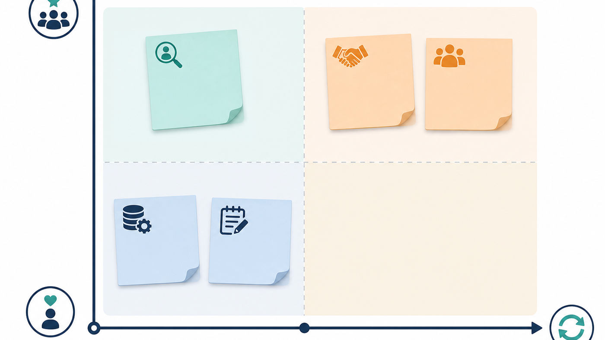
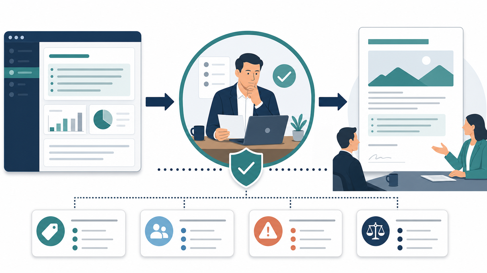
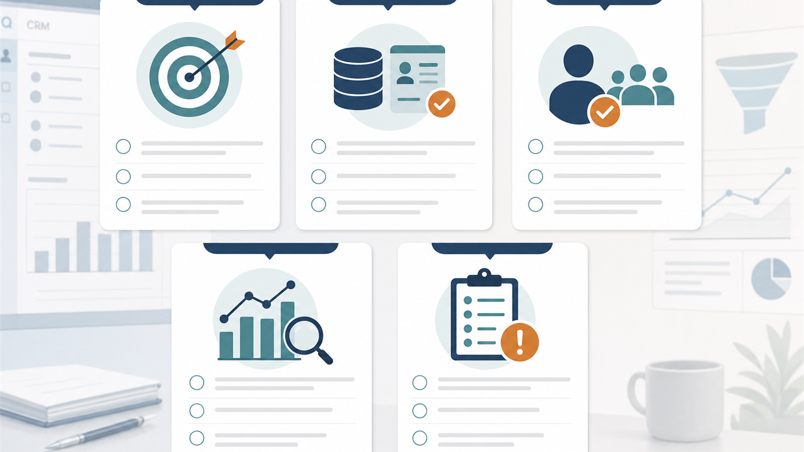
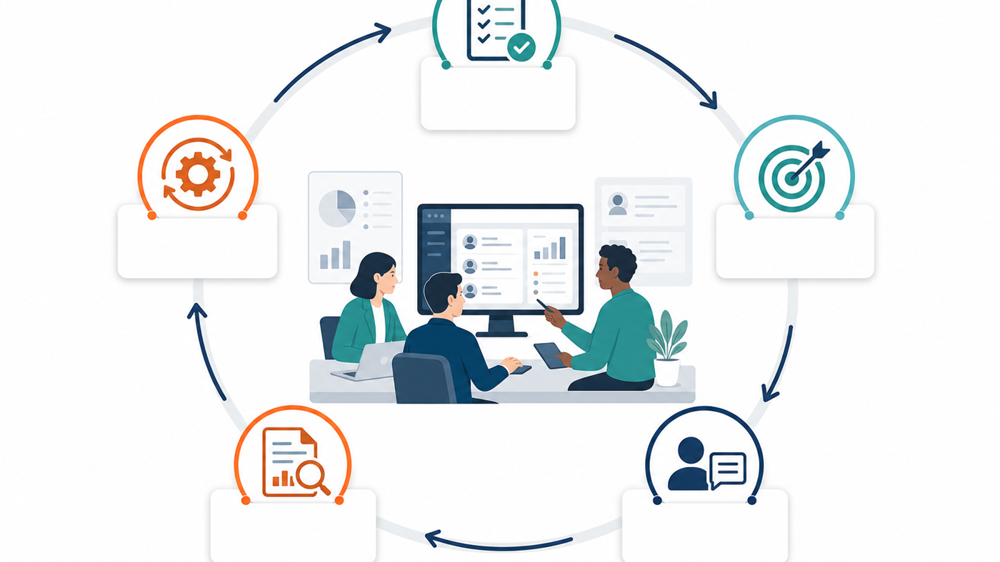
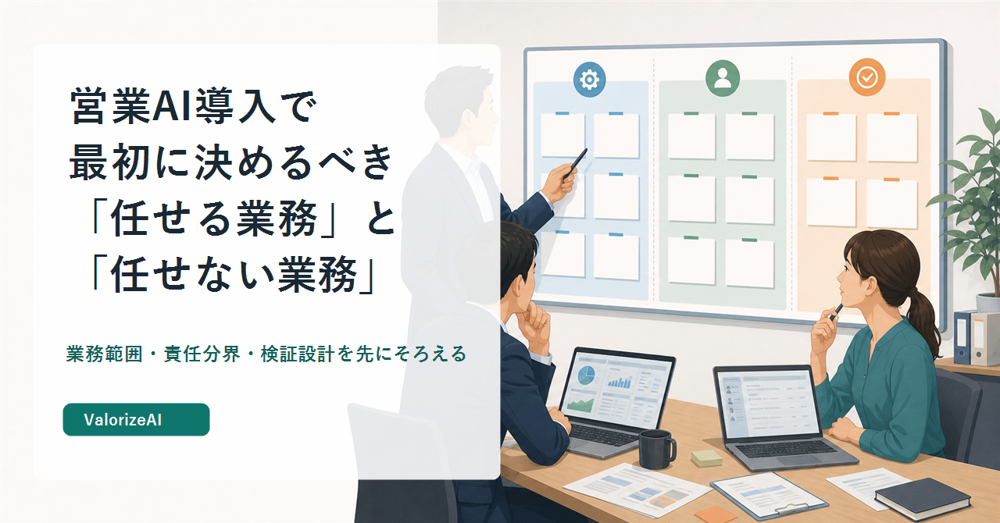

営業AIを導入するとき、最初の会議で話題になりやすいのはツールの機能です。商談準備ができるのか。議事録を要約できるのか。メール文面を作れるのか。CRMに自動入力できるのか。どれも現場の負荷に直結するため、関心が集まるのは自然です。
ただ、営業責任者やマーケティング責任者が本当に先に決めるべきことは、機能の優劣ではありません。どの業務をAIに使わせ、どの業務は任せず、どの業務はAIの下書きを人間が確認するのか。その境界です。
この境界が曖昧なまま導入すると、営業AIは便利な試用ツールにはなりますが、組織の業務にはなりません。現場は「使ってよい」と言われる一方で、最終判断は自己責任になります。マネージャーは利用を促す一方で、重要顧客への提案や価格条件で何が起きているかを追いきれません。情シスや法務は、後から顧客情報の入力範囲を確認することになります。
営業AIの導入は、AIに営業を任せる話ではありません。営業判断を支える前工程を、どこまで標準化し、どこから人間の責任として残すかを決める話です。
この記事では、営業AI導入前に決めておきたい「任せる業務」と「任せない業務」を、現場定着、データ、責任分界、顧客接点、検証設計の観点から整理します。単なる用途リストではなく、導入後に混乱しないための判断軸として読んでください。
営業AIが使われない原因は、機能不足より業務範囲の曖昧さにある
営業AIが現場に定着しないとき、原因はツールの性能だけではありません。むしろ、よく起きるのは「何に使うのかは分かるが、どこまで任せてよいかが分からない」という状態です。
たとえば、AIに商談議事録を要約させること自体は難しくありません。録音やメモを渡せば、論点を整理し、次回アクションらしきものを出してくれます。しかし、その出力をCRMに登録してよいのか。顧客に送ってよいのか。失注理由として集計してよいのか。マネージャーが確認するのか。ここが決まっていないと、要約は増えても業務は整いません。
営業AIの導入で最初に必要なのは、「便利そうな業務」から選ぶことではなく、業務を三つに分けることです。AIに任せやすい業務。AIの下書きを人間が確認する業務。AIには任せない業務。この三分類がないと、現場は毎回その場で判断することになります。
総務省・経済産業省の「AI事業者ガイドライン 第1.2版」は、AI利用における人間中心、安全性、プライバシー、セキュリティ、透明性、アカウンタビリティなどを整理しています。営業部門のAI利用も、例外ではありません。顧客情報を扱い、社外との接点に影響し、商談判断に関わる以上、利用範囲、確認責任、記録、説明可能性を業務として設計する必要があります。
出典: https://www.meti.go.jp/shingikai/mono_info_service/ai_shakai_jisso/pdf/20260331_1.pdf
ここを軽く見ると、営業AIは「誰かがうまく使うツール」になります。優秀な担当者は自分で出力を直し、顧客文脈に合わせて使えます。一方で、経験の浅い担当者はAIの出力をそのまま使い、マネージャーは後から違和感に気づきます。これでは、AI導入というより、判断のばらつきを増幅しているだけです。
業務範囲を先に決めることは、AI活用を狭めるためではありません。安心して使える範囲を広げるためです。任せる業務を決めるのと同じくらい、任せない業務を決めることが重要になります。
最初にAIへ任せやすいのは、判断ではなく整理・分類・下書きです
営業AIに任せやすい業務には共通点があります。反復性が高く、入力と出力の形を揃えやすく、誤りがあっても人間が検知しやすい業務です。
具体的には、商談メモの構造化、議事録の要点整理、顧客情報の初期調査、過去接点の整理、CRM項目の候補作成、メール文面の下書き、提案前の確認質問案の作成などが該当します。これらは営業判断そのものではなく、判断の前に必要な材料整理です。
一方で、AIに任せると危うい業務もあります。価格条件の最終判断、重要顧客への提案方針、失注理由の最終解釈、競合に対する勝ち筋の断定、契約条件に関わる説明、顧客の社内政治や関係性を踏まえたメッセージの決定です。これらは、誤ったときの顧客影響が大きく、文脈の読み違いが商談関係に残ります。
境界を考えるときは、「AIにできるか」ではなく、「間違えたときに誰が気づけるか」を見るべきです。AIはもっともらしい文章を作れます。だからこそ、間違いが目立たないことがあります。見た目が整っている出力ほど、営業現場ではそのまま使われやすい。責任者が見なければならないのは、精度の平均ではなく、重要な場面で誤りを止められる運用です。

JIPDECとITRの「企業IT利活用動向調査2025」では、国内企業1,110社のうち45.0%が生成AIを利用しているとされています。一方で、生成AI利用リスクとして、全社利用企業では機密情報漏えい懸念、特定部門利用企業では偽情報・誤情報を信じる懸念が大きく挙げられています。
出典: https://www.jipdec.or.jp/news/pressrelease/20250314.html
この調査から読み取るべきなのは、生成AI利用が珍しい段階を過ぎつつある一方で、組織が気にしているリスクはかなり実務的だということです。営業AIも同じです。使うか使わないかではなく、どの業務なら誤りを吸収でき、どの業務では誤りが顧客接点を壊すのかを分ける必要があります。
営業AIに最初に任せるべきなのは、営業の判断そのものではありません。判断に入る前の情報整理、候補出し、比較観点の下書きです。そこから先の優先順位づけ、顧客に伝える言葉、商談で踏み込む深さは、人間が責任を持つ領域として残したほうがよいです。
商談準備はAIに任せるほど、人が見る順番を決める必要がある
商談準備は、営業AIの導入対象として分かりやすい業務です。企業サイト、ニュース、IR、過去商談、問い合わせ履歴、名刺情報、MAの行動ログ、商談録画。これらを毎回人間が見に行くのは時間がかかります。AIで整理したいと思うのは自然です。
しかし、商談準備をAIに任せるほど、人間側が「見る順番」を決める必要があります。AIに「この会社について調べて」と依頼すると、たいていは会社概要、事業内容、ニュース、一般的な課題が並びます。きれいではありますが、商談で確認すべき問いに届かないことが多い。
商談準備で見るべき順番は、会社概要からではなく、顧客に起きている変化から始めるほうが実務に合います。事業方針の変更、組織変更、採用強化、拠点展開、価格改定、規制対応、新規事業、撤退、統合。こうした変化は、顧客の中に新しい負荷や意思決定が生まれている可能性を示します。
次に見るのは、購買や検討の兆候です。資料ダウンロード、セミナー参加、問い合わせ、比較ページ閲覧、過去接点。ここで「興味あり」と短絡してはいけません。行動データは、相手が何に不安を持ち、どの比較軸を見ているかを読む材料です。
その後に、既存接点と意思決定構造を重ねます。過去商談で何が刺さらなかったか。失注理由は現在も有効か。誰が利用部門で、誰が予算を持ち、誰がセキュリティや法務を見ているか。ここまで読んで初めて、AIの出力は会社紹介から商談準備に近づきます。
商談準備をAIに任せるというのは、AIが勝手に顧客理解を完成させることではありません。人間が決めた読み順に沿って、散らばった情報を短時間で並べ替えることです。
議事録や商談メモは、要約ではなく次の判断材料に変換する
営業AIの導入で最初に試されやすいのが、議事録や商談メモの要約です。これは効果を感じやすい領域です。商談後のメモ作成が楽になり、チーム共有もしやすくなります。
ただし、要約だけで止まると、営業組織の学習にはなりません。商談メモで本当に重要なのは、何を話したかではなく、次に何を判断すべきかです。顧客の目的、制約、懸念、比較軸、意思決定者、次回までの未確認事項。これらが分かれていなければ、次回提案はまた担当者の記憶に戻ります。
AIに任せるなら、単なる要約ではなく、メモを判断材料に変換する設計にしたほうがよいです。顧客発言と営業側の解釈を分ける。確定事実と仮説を分ける。次回確認すべき質問を出す。提案に使ってよい根拠と、まだ確認が必要な情報を分ける。この粒度まで整理できると、AIの出力は営業会議で使いやすくなります。
ここで気をつけたいのは、AIのために入力項目を増やしすぎることです。営業AIを導入すると、「AIに読ませるデータが足りない」という話になりがちです。その結果、CRMの必須項目が増え、商談後の入力負荷が増え、現場からするとAIのための作業が増えたように見えます。
AIに使わせる業務を決めるときは、入力負荷も一緒に見る必要があります。AIで5分短縮できても、そのために商談後の入力が10分増えるなら、現場には定着しません。重要なのは、AIに読ませるデータを増やすことではなく、営業判断に使える粒度のデータを決めることです。
IPAの「DX動向2025」は、DXの取組成果、データ利活用、AI・生成AI、人材、企業文化などを多面的に扱っています。営業AIも、ツール単体の問題ではなく、データ、業務プロセス、人材、評価の問題として扱うべきです。
出典: https://www.ipa.go.jp/digital/chousa/dx-trend/dx-trend-2025.html
議事録やメモのAI活用は、現場負荷を下げる可能性があります。しかし、要約の品質だけを見ていると、導入後に「メモは増えたが、判断材料は増えていない」という状態になります。見るべきなのは、後続業務で再利用できるかどうかです。
顧客への提案判断は、AIの出力ではなく営業側の責任として残す
営業AIで最も慎重に扱うべきなのは、顧客に直接影響する出力です。メール文面、提案理由、価格条件、導入効果の説明、競合比較、契約条件に近い表現。これらは、文章として自然であっても、営業判断として正しいとは限りません。
AIの下書きは、顧客文脈に合っていれば便利です。商談後のフォローメール、初回接点の文面、提案書の構成案、検討状況に応じた質問案などは、作業時間を減らせます。しかし、重要顧客へのメッセージや条件交渉に関わる表現は、人間が最後に責任を持つべきです。
特にBtoB営業では、正しい情報を送ることと、相手の事情を理解していると感じてもらうことは同じではありません。AIが作った整った文章は、悪くはないがどこか一般的に見えることがあります。顧客が求めているのは、上手な文章ではなく、自社の状況を踏まえた判断です。

個人情報保護委員会の注意喚起では、生成AIサービスへ個人情報を含むプロンプトを入力する場合、利用目的の範囲内か確認すること、本人同意なしに個人データを入力し応答以外の目的で扱われる場合は法令違反の可能性があることが示されています。営業では、顧客名、担当者情報、商談メモ、問い合わせ履歴、メール内容などが対象になり得ます。
出典: https://www.ppc.go.jp/files/pdf/230602_alert_generative_AI_service.pdf
この論点は、情シスや法務だけの話ではありません。営業責任者が、自分たちの業務でどこまでAIに入力してよいかを理解していなければ、現場は便利さを優先してしまいます。あとから禁止するだけでは、現場には「また止められた」と見えます。
だからこそ、導入前に「AIに入れてよい情報」と「入れてはいけない情報」を分ける必要があります。顧客名を含む商談メモはどこまで扱えるのか。契約条件や価格条件は入力できるのか。外部サービスに入力するのか、社内環境で処理するのか。出力を顧客に送る前に誰が確認するのか。ここまで決めて初めて、現場は安心して使えます。
情シスと法務はブレーキ役ではなく、使える範囲を広げる設計者です
営業部門主導でAI活用を始めると、情シスや法務の関与が後回しになることがあります。最初は小さな試用だから、現場だけで始める。効果が出そうになってから相談する。ところが、その時点で顧客情報や商談メモの扱いが曖昧だと、後から止まります。
ここで重要なのは、情シスや法務を「止める人」として扱わないことです。営業AIの業務範囲を広げるには、使えない理由を探すだけではなく、どの条件なら使えるかを一緒に設計する必要があります。
たとえば、公開情報の要約は外部AIでよいが、商談メモは社内環境で扱う。顧客名を伏せた仮説作成は可だが、個人名や契約条件を含む入力は不可。メール文面の下書きは可だが、重要顧客への送信前にはマネージャー確認を入れる。こうした線引きは、営業だけでは決めきれません。
経済産業省の「AI・データの利用に関する契約ガイドライン」は、データ利用やAI技術を利用するソフトウェアの開発・利用に関する契約上の論点を整理しています。営業AIでも、ベンダーや外部ツールへ営業データを渡す場合、データ利用権限、学習利用、成果物、責任分界を確認する必要があります。
出典: https://www.meti.go.jp/press/2019/12/20191209001/20191209001-1.pdf
この確認を後回しにすると、営業現場では二つの不幸が起きます。一つは、便利な使い方が後から禁止されること。もう一つは、本来止めるべき使い方が現場判断で続いてしまうことです。どちらも、営業AIの定着を損ないます。
任せない業務を決めることは、保守的な判断ではありません。安全に使える範囲を広げるための前提です。
現場定着を見るなら、利用回数より業務プロセスの変化を見る
営業AIを導入すると、最初の指標として利用回数や生成回数を見たくなります。何人が使ったか。何件の要約が作られたか。何通のメールが作成されたか。これらは初期の把握には役立ちますが、責任者の判断材料としては不十分です。
本当に見るべきなのは、業務プロセスが変わったかです。商談準備のばらつきは減ったのか。議事録から次回アクションへつながる率は上がったのか。CRM入力の修正回数は減ったのか。マネージャー確認の負荷は増えていないか。重要顧客へのメッセージ品質は落ちていないか。現場が裏でAI出力を直し続けていないか。
IPAの「DX推進指標 自己診断結果 分析レポート 2024年版」では、DX成熟度がレベル0から2未満の企業が6割で、投資意思決定、予算配分、評価、人材の融合などが課題として挙げられています。AI導入でも同じで、使ったかどうかだけではなく、投資判断と評価の仕組みが必要です。
出典: https://www.ipa.go.jp/digital/dx-suishin/tbl5kb0000007nt4-att/dx-suishin-report2024.pdf
営業AIの検証指標は、業務ごとに変えるべきです。記録・要約系なら、抜け漏れ、修正回数、後続業務での再利用率を見る。商談準備系なら、仮説の具体性、確認すべき論点の網羅性、マネージャー確認の負荷を見る。メール・提案文面系なら、返信率だけでなく、顧客文脈との整合性や過度な一般化が起きていないかを見る。
時間短縮は大事です。しかし、短縮された時間が商談品質や顧客理解に戻らないなら、営業AIは単なる作業圧縮になります。責任者が見たいのは、作業量が減ったことではなく、判断の質が揃い、現場が再現可能に動けるようになったかです。
導入前に決めておきたい業務境界のチェック観点
営業AIの導入前に決めるべきことは、細かい操作手順ではありません。少なくとも、次の五つを先に決めておくと、導入後の混乱を減らせます。
- 業務範囲: どの業務をAIに任せ、どの業務は人間が主導し、どの業務はAIの下書きを人間が確認するのか。
- 入力データ: どのデータをAIに読ませてよく、どのデータは匿名化、社内環境、または入力禁止にするのか。
- 確認責任: 出力を誰が確認し、どの顧客接点ではマネージャーや法務の確認を入れるのか。
- 検証指標: 時間短縮だけでなく、商談品質、入力負荷、修正回数、顧客反応、例外発生をどう見るのか。
- 例外対応: AI出力が誤っていた場合、顧客に影響した場合、ルール外利用が起きた場合に、誰が止めて何を更新するのか。

経済産業省の「DX推進指標」は、経営者や関係者が現状、あるべき姿、ギャップ、対応策を共有し、次のアクションにつなげるための自己診断指標です。営業AI導入でも、同じ発想が必要です。営業、マーケティング、情シス、法務、経営がそれぞれ別の期待を持ったままツール選定に入ると、導入後に評価が割れます。
出典: https://www.meti.go.jp/policy/it_policy/investment/dx-shihyo.html
導入会議では、ツールのデモを見る前に、業務境界を一度書き出したほうがよいです。商談準備、議事録、CRM入力、提案文面、リード選定、失注分析、マネジメント支援。それぞれについて、AIに任せる、AIの下書きを使う、人間が判断する、まだ使わない、のどれに置くのかを決める。
この線引きは固定ではありません。最初は保守的でよいです。重要なのは、試行後に更新できる形にしておくことです。
営業AIは、固定ルールではなく更新される運用として育てる
営業AIの業務境界は、一度決めたら終わりではありません。実際に使うと、想定より任せやすい業務もあれば、想定より危うい業務も出てきます。だから、導入前の線引きは、完璧な規程ではなく、更新可能な運用として設計する必要があります。
最小の運用サイクルは、業務を選ぶ、試行する、人が確認する、ログを見る、ルールを更新する、という流れです。ここでいうログは、単なる利用回数ではありません。どの出力が修正されたか。どの業務で確認負荷が増えたか。どの顧客接点で違和感が出たか。どの入力データが古く、判断を歪めたか。こうした情報を次のルールに戻します。

AI事業者ガイドライン別添では、自社のAIポリシーや規定に合ったチェックリストやワークシートを作成、更新、有効活用することが重視されています。営業部門でも、汎用チェックリストをそのまま使うのではなく、自社の商談、データ、顧客接点、承認フローに合わせて更新する必要があります。
出典: https://www.meti.go.jp/shingikai/mono_info_service/ai_shakai_jisso/pdf/20260331_3.pdf
営業AIは、万能な担当者ではありません。営業組織が何を見て、何を判断し、何を記録し、どこで止めるかを揃えるための運用基盤です。任せる業務を決めることは効率化の設計であり、任せない業務を決めることは競争力を残す設計です。
商談準備、議事録、CRM入力、提案文面、リード選定。どの業務から始めるにしても、最初に決めるべき問いは同じです。この業務でAIが間違えたとき、誰が気づけるのか。顧客に影響する前に止められるのか。次回の運用に戻せるのか。
この問いに答えられる業務から始めると、営業AIは現場に押し付けるツールではなく、営業判断を揃える仕組みになります。逆に、この問いを飛ばすと、AIは便利な下書き作成機能に留まり、組織の営業力にはなりません。
営業AI導入で最初に決めるべきなのは、どのAIが賢いかではありません。自社の営業組織が、どの判断を人間の責任として残し、どの前工程をAIで整えるのかです。
noteサムネイル

画像メモ
[画像: 00_note_thumbnail.png] 用途: note見出し画像 配置: note投稿時の見出し画像。本文内では確認用に末尾へ掲載。 サイズ: 1280 x 670 画像説明: 営業AI導入前に、営業担当、管理者、AI支援領域の業務境界を確認しているビジネス図解。 生成プロンプト: Flat business editorial illustration, Japanese B2B sales operations, sales manager and team looking at a task boundary board, CRM dashboard panels, clear human and AI role separation, calm office meeting room, simple navy green orange palette, clean white background, no robot, no sci-fi glow, no futuristic hologram, space for large Japanese title on the left, 1280x670. トリミング確認: 1280 x 670へ調整し、正確な日本語タイトルを後処理で重ねた。 note貼り付けメモ: noteの見出し画像として設定する。
[画像: 01_eyecatch.png] 用途: 記事内アイキャッチ 配置: 導入直後 サイズ: 1400 x 788 画像説明: 「任せる業務」「任せない業務」「人が確認する業務」を分けるタスクボード。 生成プロンプト: Flat business diagram illustration of a three-column task board for sales AI adoption. トリミング確認: 1400 x 788へ調整済み。 note貼り付けメモ: 本文冒頭の最初の画像として貼る。
[画像: 02_boundary_map.png] 用途: 章間図解 配置: 「整理・分類・下書き」の章 サイズ: 1400 x 788 画像説明: 反復性と顧客影響度で業務境界を分ける2軸マップ。 生成プロンプト: Clean flat 2x2 matrix diagram for sales AI task boundary. トリミング確認: 1400 x 788へ調整済み。 note貼り付けメモ: 任せる業務と任せない業務の判断軸説明後に貼る。
[画像: 03_crm_load.png] 用途: 章間画像 配置: 議事録・商談メモの章 サイズ: 1400 x 788 画像説明: CRM入力と商談メモ整理で発生する現場負荷。 生成プロンプト: Flat business illustration of sales rep dealing with CRM data entry burden. トリミング確認: 1400 x 788へ調整済み。 note貼り付けメモ: CRM入力負荷の説明直後に貼る。
[画像: 04_human_review_gate.png] 用途: 章間図解 配置: 顧客向け提案判断の章 サイズ: 1400 x 788 画像説明: AI出力から顧客向け提案へ進む前に人間の確認ゲートを置く流れ。 生成プロンプト: Flat process diagram showing AI output passing through human review gate. トリミング確認: 1400 x 788へ調整済み。 note貼り付けメモ: 顧客接点の責任分界説明に合わせて貼る。
[画像: 05_verification_meeting.png] 用途: 章間画像 配置: 現場定着と検証指標の章 サイズ: 1400 x 788 画像説明: 営業責任者、営業企画、現場マネージャーが導入後の指標を確認する会議。 生成プロンプト: Flat business illustration of sales AI verification meeting. トリミング確認: 1400 x 788へ調整済み。 note貼り付けメモ: 検証指標の説明前に貼る。
[画像: 06_governance_loop.png] 用途: 章間図解 配置: 運用ループの章 サイズ: 1400 x 788 画像説明: 業務選定、試行、人の確認、ログ確認、ルール更新の循環。 生成プロンプト: Clean flat circular workflow diagram for sales AI governance loop. トリミング確認: 1400 x 788へ調整済み。 note貼り付けメモ: 業務境界を更新する運用説明に合わせて貼る。
[画像: 07_checklist_summary.png] 用途: 終盤の整理図 配置: 導入前チェック観点の章 サイズ: 1400 x 788 画像説明: 業務範囲、入力データ、確認責任、検証指標、例外対応を整理するカード型図解。 生成プロンプト: Flat editorial checklist diagram for sales AI adoption readiness. トリミング確認: 1400 x 788へ調整済み。 note貼り付けメモ: 読後の持ち帰り観点として貼る。